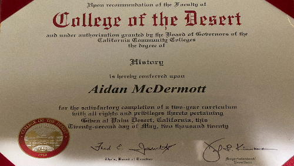
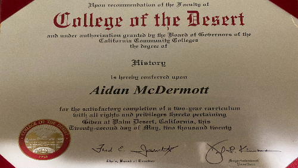
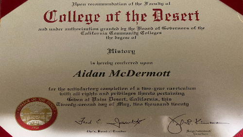

Aidan McDermott
My name is Aidan McDermott. I was born on August 11th, 1997, as one of the last children to be born in Eisenhower Medical Center, in the city of Palm Desert. I grew up in Indian Wells and La Quinta, spending my time with family, and the few friends I was lucky enough to make. I was never really a socially active young man, and so more often then not I would spend my time indoors, usually reading or playing video games or listening to music. I had the great fortune to attend a number of private schools that helped me on my journey, even when I tended to be lazy and slack off rather than doing the work I was supposed to. Looking back, I'm surprised I managed to make it through as well as I did!
Ever since I was a student at Sacred Heart Middle SChool, I've held a love for History. The stories, the people who make it up, the events and twists and turns that course of history has taken over the millennia, all of these things fascinate me. And so I dedicated myself to learning History, not just so that I could learn more about my favorite subject, but so that I could share what I've learned with others, and hopefully awaken that same love for it in my students. If I can reach out to even one person, if I can change their lives for the better by helping them discovering just how much history might mean to them, I will consider myself a success. And who knows? Even if they don't come to love history by itself, maybe one of the stories within history, a person who stood up for what they believe in, a great triumph against of overwhelming odds, a reunion between families seperated by war or illness, might inspire them by themselves.
Of course, I would never have been able to set down this road in the first place if it hadn't been for the many incredible people in my life. My parents, my aunts and uncles, my siblings, my grandmother, and of course all the teachers I've had over the years, who somehow found the strength to put up with me despite how much of a lazy pain in the rear I could be. Hopefully, I will have the same patience when it comes to dealing with my own students, though my father used to joke that when it came time for me to be a parent, my children would be just as much of a pain for me as I was for my dad, and he himself was for his own father. I'd imagine it will be the same way with my students, so I've no doubt I'll have to pray for strength and patience when Karma comes around to give me a good smack upside the head by sending me students that I would have considered my best friends when I was a boy but drive me crazy now.
Experience
Teaching Assistant
• Helped my High School teacher in History
• Helped my classmates during History trivia games
• Helped my classmates with projects
Angel View volunteer
• Worked at the La Quinta Angel View
• Performed a variety of tasks such as sorting, packaging, trasnportation, and speaking with donators
Babysitter
• Looked after most of my thirteen nephews and nieces
• Helped take care of my little cousin
• Was part of a student group who looked after several children with disabilities
• Also looked after several family pets while their owners were at work
Education
UC Riverside
University of California Riverside
University of California Riverside
Portfolio


 

